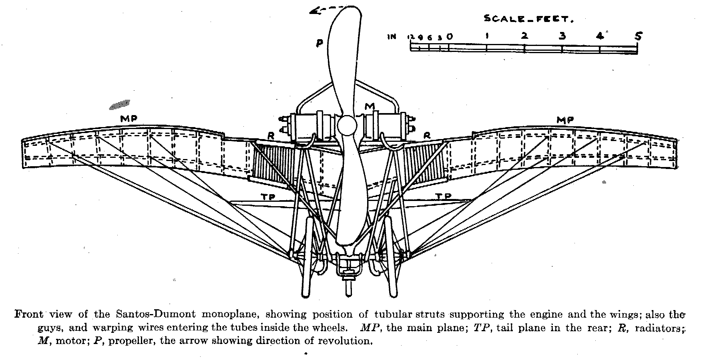
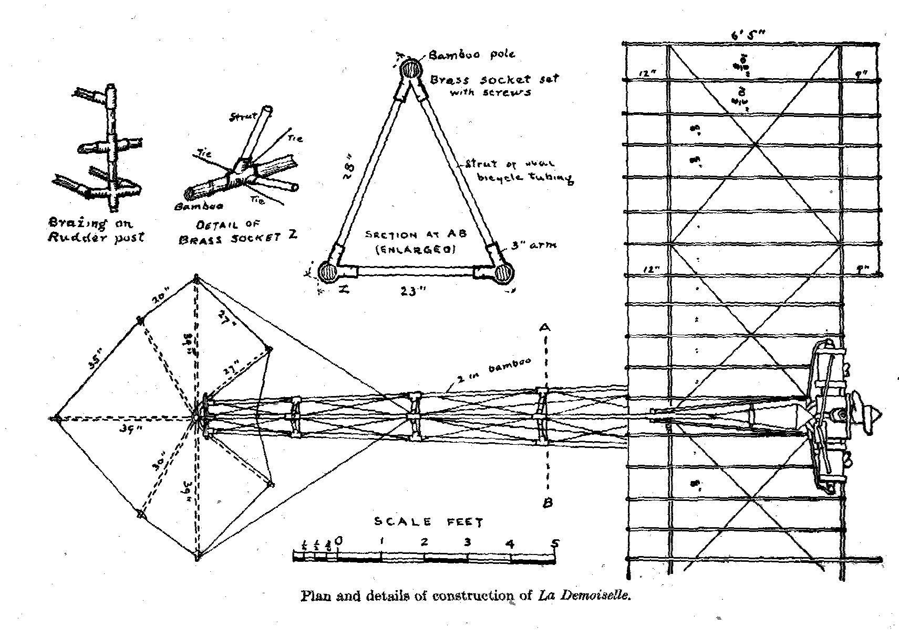
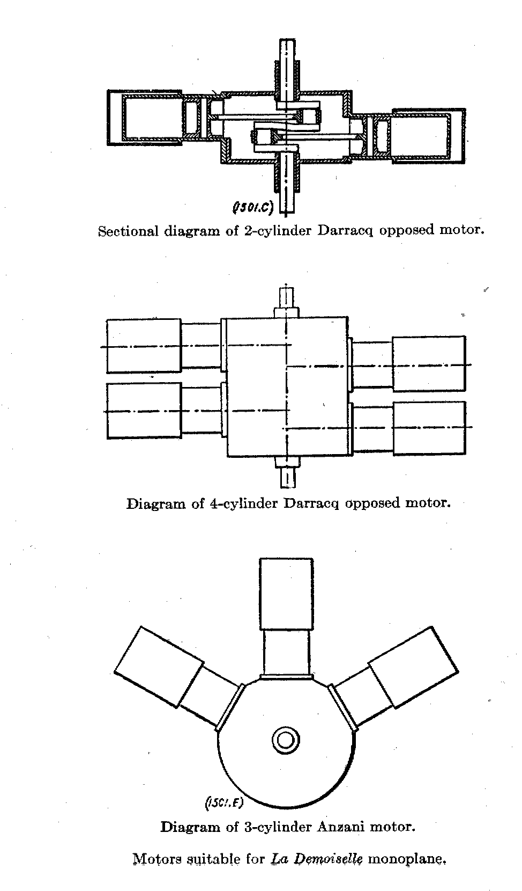
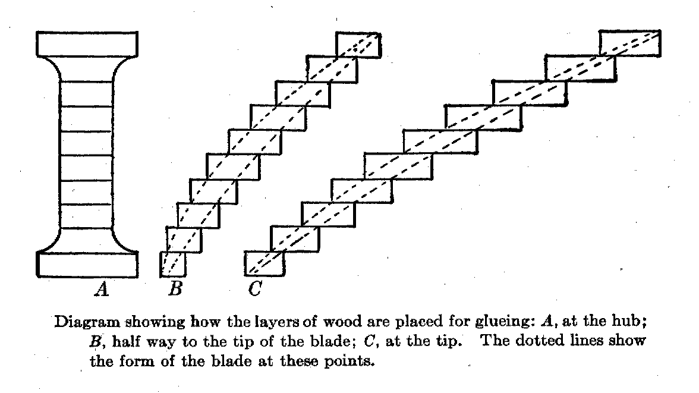
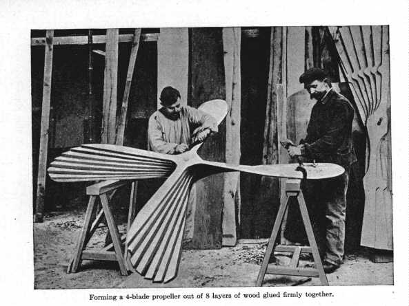

"Build"
Something I discovered on the internet that was hosted in a horrible place / way.
A kind of restoration.
BY ASHWIN ANANDANI
This is a document that I have transcribed from a chapter in an obscure antique book in my collection that is a contemporary description of the use of these plans to build your own aircraft.
"How it Flies" or "The Conquest of the Air"
By Richard Ferris B.S. C.E.
Copyright 1910 by Thomas Nelson & Sons
CHAPTER IX - FLYING MACHINES : HOW TO BUILD
Santos-Dumont's Gift:
La Demoiselle
- Mechanical skill required
- Preparatory practice
When Santos-Dumont in 1909 gave to the world the unrestricted privilege of building monoplanes after the plans of his famous No, 20 – afterward named La-Demoiselle – he gave not only the best he knew, but as much as anyone knows about the building of flying machines. Santos-Dumont has chosen the monoplane for himself because his long experience commends it above all others, and La-Demoiselle was the crowning achievement of years spent in the construction and operation of airships of all types. In view of Santos=Dumont’s notable successes in his chosen field of activity, no one can go astray following his advice.
Of course, the possibilities of plans and specifications for an aeroplane does not make any man a skilled mechanic. It is well to understand at the start that a certain degree of mechanical ability is required in building a machine which will be entirely safe. Nor does the possession of a successful machine make one an aeronaut. As in the case of bicycling there is no substitute for actual experience, while in the airship the art of balancing is of even greater importance than on the bicycle.
The would-be aviator is therefore advised to put himself through a course of training of mind and body.
Intelligent experimenting with some of the models described in Chapter XI, will teach much of the action of aeroplanes in calms and when wind are blowing; and practice with the glider (see Chapter XII).) will give experience in balancing which will be of greatest value when one launches into the air for the first time with a power driven machine. An expert acquaintance with gasoline motors and magnetos is a prime necessity. In short, every bit of information on the subject of flying machines and their operation cannot fail to be useful in some degree.
The dimensions of the various parts of the Santos-Dumont monoplane are given on the original plans according to the metric system. In reducing these to "long measure" inches, all measurements have been given to the nearest eighth of an inch.
In general,, we may note some peculiarities of La-Demoiselle, the spread of the plane is 18 feet from tip to tip, and it is 20 feet overall from bow to stern. In height, it is about 4 feet 2 inches when the propeller blades are in a horizontal position. The total weight of the machine is 265 lbs., of which the engine weighs about 66 lbs. The area of the plane is 115 square feet, so that the total weight supported by each square foot with Santos-Dumont (weighing 110 lbs.) on board is a trifle over 3 lbs.

The frame of the body of the monoplane is largely of bamboo, the three main poles being 2 inches in diameter at the front, and tapering to about 1 inch at the rear. They are joined with brass sockets just back of the plane, for convenience of taking apart for transportation. Two of these poles extend from the axle of the wheels backward and slightly upward to the rudder-post, The third extends from the middle of the plane between the wings, backward and forward of the rudder post. In cross section the three form a triangle with the apex at the top. These bamboo poles are braced about every 2 feet with struts of steel tubing of oval section, and the panels so formed are tied by diagonals of piano wire fitted with turn-buckles to draw them taut.


In the Santos-Dumont machine a 2 cylinder opposed Darracq motor of 30 horse-power was used. It is of the water-cooled type, the cooling radiator being a gridiron of very thin 1/8 inch copper tubing, and hung on the side of the plane on either side of the engine. The cylinders have a bore of about 4 ½ inches , and a stroke of about 4 ¾ inches. The propeller is 2-bladed, 6 ½ feet across, and is run at 1,499 revolutions per minute, at which speed it exerts a pull of 242 lbs.
Each wing of the main plane is built upon 3 transverse spars extending outward from the upper bamboo pole, starting at a slight angle upward and bending downward nearly to the horizontal as they approach the outer extremities. These spars are of ash, 2 inches wide, and tapering in thickness from 1 ½ inches at he central bamboo to about 7/8 inch at the tips of the wings. They are bent into shape by immersion in hot water, and straining them around blocks nailed to the floor of the workshop, in the form shown at QQ, p. 177.
The front spar is set about 9 inches back from the front edge of the plane, and the rear one about 12 inches forward of the back edge of the plane. Across these spars, and beneath them, running fore and aft, are bamboo rods about ¾ of an inch in diameter at the forward end, and tapering toward the rear. They are set 8 ½ inches apart (centre to centre) except at the tips of the wings. Two outer panels are 10 ¼ inches from centre to centre of the rods, to give greater elasticity in warping. These fore-and –aft rods are 6 feet 5 inches long, except directly back of the propeller, where they are 5 feet 8 inches long; They are bound to the spars with brass wire No, 25, at the intersections. They are also bent to a curved form, as shown on the plans, by the aid of the hot-water bath. Diagonal guys of piano wire use to truss the frame in two panels in each wing.
Around the outer free ends of the rods runs a piano wire No, 20, which is let into the tips of the rods in a slot 3/8 inch deep. To prevent splitting of the bamboo, a turn or two of the brass wire may be made around the rod just back of the slot; but it is much better to provide thin brass caps for the ends of the rods, and cut the slots in the metal as well as in the rods. Instead of caps, ferrules will do. When the slots are cut, let the tongue formed by cutting be bent down across the bamboo to form the floor of the slot, upon which the piano wire may rest. The difference in weight and cost is very little, and the damage that may result from a split rod may be serious.
After the frame of the plane is completed it is to be covered with cloth on both sides, so as entirely to enclose the frame, except only the tips of the rods, as shown on the plans. In the Santos-Dumont monoplane the cloth used id of closely woven silk, but a strong, unbleached muslin will do – the kind made especially for aeroplanes is best.
Both the upper and lower surfaces must be stretched taut, the edges front and back being turned over the piano wire, and the wire hemmed in. The upper and lower surfaces are the sewn together – "through and through," as a seamstress would say – along both sides of each rod, so that the rods are practically in "pockets. " Nothing is to be slighted, if safety in flying is to be assured.
The tail of the monoplane is a rigid combination of two planes intersecting each other at right angles along a central bamboo pole which extends back 3 feet 5 ½ inches from the rudder post, to which it is attached by a double joint, permitting it to move upon either the vertical or horizontal axis.
Although this tail, or rudder, may seem at first glance somewhat complicated in the plans, it will not be found so if the frame of the upright or vertical plane be first constructed, and that of the level or horizontal plane afterward built fast to it at right angles.
As with the main plane, the tail is to be covered on both sides with cloth, the vertical part first; the horizontal halves on either side so covered that the cloth of the latter may be sewed above and below the central pole. All of the ribs in the tail are to be stitched in with "pockets" as directed for the rods of the main plane. The construction of the motor is possible to an expert machinist only, and the aeroplane builder will save time and money by buying his engine from a reliable maker. It is not necessary to send to France for a Darracq motor. Any good gasoline engine of equal power, and about the same weight will serve the purpose.
The making of the propeller is practical for a careful workman. The illustrations will give a better idea than words of how it should be done. It should be remembered, however that the safety of the aviator depends as much upon the propeller as upon any other part of the machine. The splitting of blades when in motion has been the cause of serious accidents. The utmost care, therefore, should be exercised in the selection of the wood, and the gluing of the several sections into one solid mass, allowing the work to dry thoroughly under heavy pressure.

The forming of the blades requires a good deal of skill, and some careful preliminary study. It is apparent that the speed of a point at the tip of a revolving blade is much greater than that of a point near the hub, for it traverses a larger circle in the same period of time. But if the propeller is to do effective work without unequal strain, the twist in the blade must be such that each point in the length of the blade is exerting an equal pull on the air. It is necessary, therefore, that the slower moving part of the blade, near the hub, or axis, shall cut "deeper" into the air than the more swiftly moving tip of the blade. Consequently the blade becomes continually "flatter" (approaching the plane in which it revolves) as we work from the hub outward toward the tip. This "flattening" is well shown in the nearly finished blade clamped to the bench at the right of the illustration – which shows a four-bladed propeller, instead of the two-bladed type needed for the monoplane.

The propeller used for propulsion in air differs from the propeller-wheel used for ships in the water, in that the blades are curved laterally; the forward face of the blade being convex, and the rearward face concave. The object of this shaping is the same as for curving the surface of the plane – to secure smoother entry into the air forward, and a compression in the rear which adds to the holding power on the substance of the air. It is extremely difficult to describe this complex shape, and the amateur builder of a propeller would do well to inspect one made by a professional, or buy it ready made with his engine.
The following quotation from Sir Hiram Maxim’s account of his most effective propeller may aid the ambitious areoplane builder: "My large screws were made with a great degree of accuracy; they were perfectly smooth and even on both sides, the blades being thin and held in position by a strip of rigid wooden the back of the blades . . . . Like the small screws, they were made of the very best kind of seasoned American white pine, and when finished were varnished on both sides with hot glue. When this was thoroughly dry, they were sand-papered again, and made perfectly smooth and even. The blades were then covered with strong Irish linen fabric of the smoothest and best make. Glue was used for attaching the fabric, and when dry another coat of glue was applied, the surface rubbed down again, and then painted with zinc white in the ordinary way and varnished. These screws worked exceedingly well."
The covering of the blades with linen glued fast commends itself to the careful workman as affording precaution against the splintering of the blades when in rapid motion. Some propellers have their wooden blades encased with this sheet aluminum to accomplish the same purpose, but for the amateur builder linen is far easier to apply.

The wheels are of the bicycle type, with wire spokes, but with hubs six inches long. The axle is bent to incline upward at the ends, so the wheels incline outward at the ground, the better to take the shock of a sideways thrust when landing. The usual metal or wood rim may be used, but special tires of exceptionally light construction, made for aeroplanes should be purchased.
The controlling wires or cords for moving the rudder (or tail) and for warping the tips of the wings are of flexible wire cable, such as is made for use as steering ropes on small boats. The cable controlling the horizontal plane of the rudder-tail is fastened to a lever at the right hand of the operator. The cable governing the vertical plane of the rudder-tail is attached to a wheel at the left hand of the operator. The cables which warp the tips of the wings are fastened to a lever which projects upward just back of the operator’s seat, and which is slipped into a long pocket sewed to the back of his coat, so that swaying his body in response to the fling of the tipping machine tends to restore it to an even keel. Springs are attached to all of these controlling wires, strong enough to bring them back to a normal position when the operator removes his hands from the steering apparatus.
The brass sockets used in connecting the tubular struts to the main bamboos and the rudder post, and in fastening the axle of the wheels to the lower bamboos and elsewhere, should be thoroughly made and brazed by a good mechanic, for no one should risk the chance of a faulty joint at a critical spot, when an accident may mean the loss of life.
For the rest, it has seemed better to put the details of construction on the plans themselves, where they will be available to the aeroplane builder without continually consulting the text.
Some of the work on an aeroplane will be found simple and easy; some of it, difficult and requiring much patience; and some impracticable to any one but a trained mechanic.
But in all of it, the worker's motto should be,
"Fidelity in every detail."